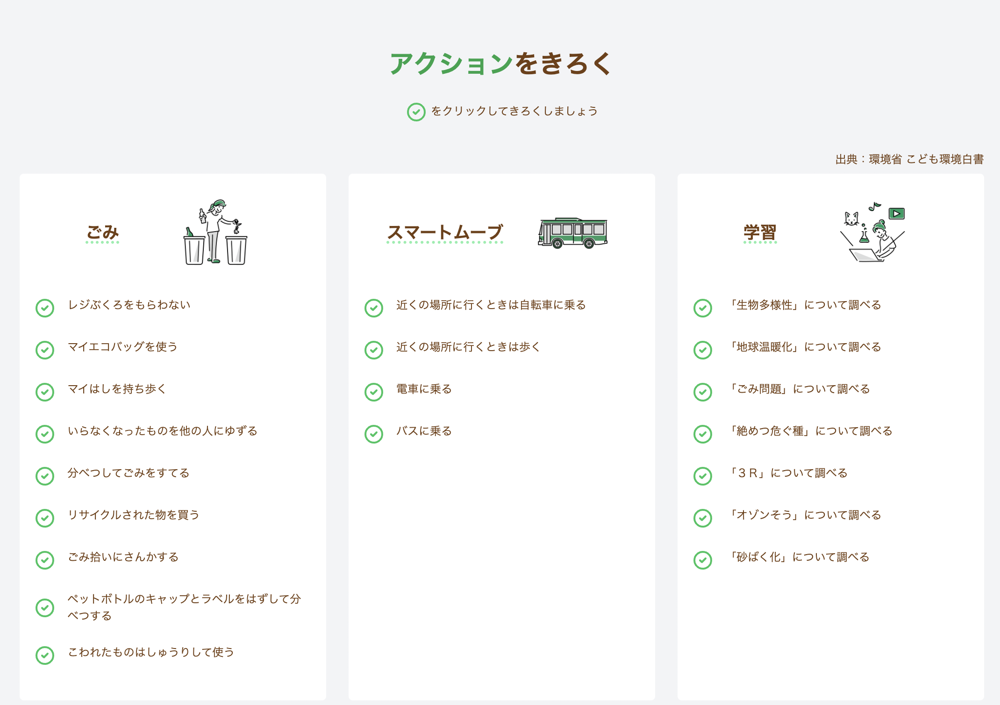
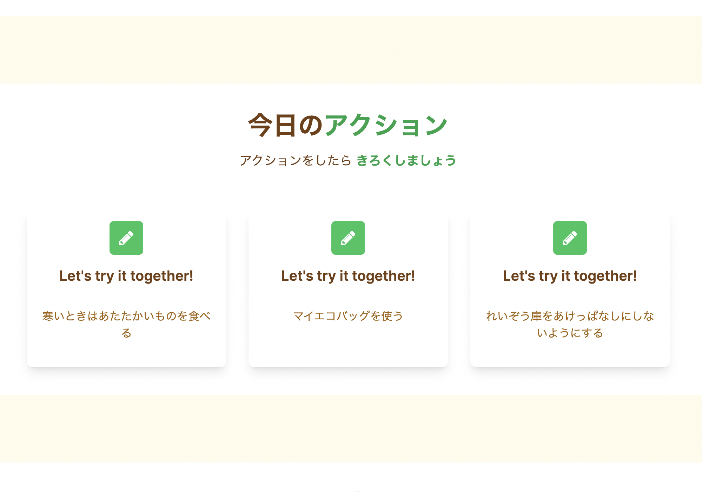
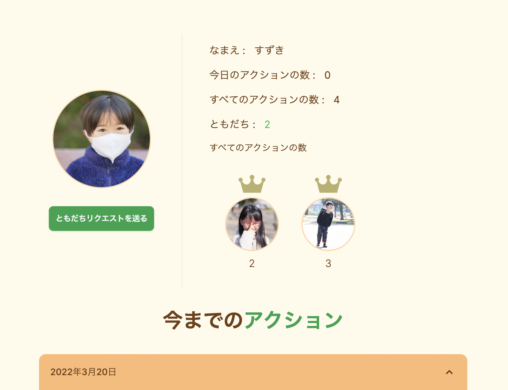

E ACTION（こども向け環境教育アプリ）

開発環境
Ruby / Ruby on Rails / JavaScript / MySQL / GitHub / Heroku / Visual Studio Code
-
概要
制作時間 160時間 URL https://e-action-app.herokuapp.com/ ID testac PASS 112233 -
動作テスト
テスト用アカウント
mail test1@com PASS aaa111
OUTLINEアプリケーションの概要
オリジナルアプリケーションとして、エコなアクションを日々記録するアプリケーションを開発しました。
主な機能は、ユーザー登録機能、その日行ったアクションを記録する機能及びフォロー機能です。
ログイン後、ヘッダーからアクションを記録するページに遷移できます。行ったアクションをクリックすると、そのユーザーのアクション実績として記録されます。
ユーザー詳細ページ（以下「マイページ」）から、これまで行ったアクションが日付ごとに確認することができます。
また、他のユーザーをフォローすることができ、相互フォロー（以下「ともだち」）状態になると、ともだち一覧のページから当日のアクション数とすべてのアクション数を確認することができます。
-
開発に至った経緯
社会的な課題であるSDGs、その中でも学生時代から興味のあった環境問題をテーマにしました。
環境問題は、ESD(Education for Sustainable Development)「持続可能な開発のための教育」が重要であるといわれているため、毎日の暮らしの中で考えて学び気づかせる習慣づけが大切なのではないかと考えました。
そのため、主に小学生を対象とした小さなアクションを積み重ねを促すようなアプリケーションを開発することにしました。
-
開発で工夫したこと
 1つ目はシンプルな操作です。
基本的にログイン以外の文字入力をユーザーにさせないようにしました。その理由は以下の通りです。
・『アクションを毎日継続するお手伝い』がコンセプトのため、煩雑な操作がないようにしました。
・小学生を対象としているため、ゲーム感覚で直感的に使えるようにしました。
なお、小学生はパソコンよりもタブレットやスマホの使用率が高いと思われますので、レスポンシブデザインを取り入れました。2つ目は今日のアクション表示です。
ログイン後、トップページに「今日のアクション」をランダムで３つ表示するようにしました。
どんなアクションをすればよいか分からない、あるいは、いつもと違うアクションに挑戦したいと思っている人のヒントになれば、という思いで実装しました。まだ実際に小学生に使ってもらったことはないのですが、ゆくゆくは友人の子供に使ってもらって意見を聞きたいと考えています。
-
今後実装したいと思っていること
ともだち機能（相互フォロー機能）について通知機能を追加したいと考えています。具体的には以下の2つです。
1つ目は、ともだちリクエストがあった際に通知される機能です。
現状は、ともだちリクエストを他のユーザーから送られていてもそれを把握する術がありません。リクエストを送ったユーザーにリクエストし返して、ともだちステータスが「ともだち」に表示が変わることで、先にリクエストされていたことに気づきます。2つ目は、ともだちリクエスト承認された際に通知される機能です。
ともだちリクエストが承認されたことを知るためには、マイページからともだちリストに当該ユーザーが追加されていることを確認する以外方法がありません。